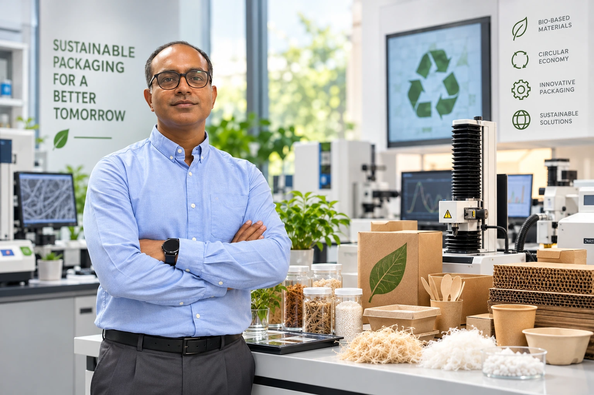

Biopolymer films
& functional coatings
Edible, composite and multilayer systems engineered for mechanical, thermal, optical and moisture-related properties.
POLYMER · PAPER · SUSTAINABLE PACKAGING
I’m Dr. Saurabh Bhatia. I develop biopolymer films, functional coatings and biomass-derived materials for food, pharmaceutical and healthcare packaging.
Sustainable Packaging Lab
Associate Professor, University of Nizwa, Oman
Natural & Medical Sciences Research Center

A research career connecting
biopolymer science, paper & sustainable packaging.
TWO MATERIAL PLATFORMS. ONE RESEARCH VISION.
Exploring how renewable resources can become packaging with useful strength, barrier properties and active functionality.
Pulp processing · Sheet formation · Coatings
↗Biopolymers · Composites · Active films
↗01 / RESEARCH FOCUS
Our work connects renewable feedstocks, material engineering and packaging performance, with a focus on product protection and the circular bioeconomy.
Edible, composite and multilayer systems engineered for mechanical, thermal, optical and moisture-related properties.
Natural additives, essential oils and bioactive compounds for antimicrobial and antioxidant functionality in packaging materials.
Recovery and use of cellulose, lignin and other renewable components from date palm residues, algae and agricultural by-products.
Pulp processing, sheet formation and coating development, supported by testing of water absorption, strength and surface properties.
Layer-by-layer material design to combine complementary barrier, mechanical and functional properties in a single packaging structure.
Fine-fibre mats and functional layers developed by electrospinning for packaging applications, including the incorporation and release of functional ingredients.
Biopolymer blends and reinforced composites that connect matrix composition, additive dispersion and interfacial interactions with material performance.
Exploring two-dimensional fillers and nanoscale material design to tune barrier, mechanical, surface and functional properties in packaging systems.
Resource recovery ↗ Material development ↗ Characterization ↗ Packaging assessment
02 / PRACTICAL EXPERTISE
My practical strengths connect paper pulping, biopolymer formulation and analytical testing with packaging performance, life cycle assessment and biodegradability assessment.
Biomass valorization, fibre recovery, pulping and refining.
Handsheet formation, biopolymer films, composites and functional coatings.
Structural, chemical, thermal, surface and particle characterization.
Strength, barrier performance, sealing and packaging durability.
Environmental impact assessment across material production, packaging use and end-of-life scenarios.
Evaluating material breakdown and biodegradation under defined environmental and test conditions.
Experience across the material development and evaluation workflow.
Relating composition and structure to packaging behaviour.
Evaluating thermal stability, wettability and visual performance.
Preparing consistent dispersions and evaluating transport properties.
Assessing resistance to handling, deformation and impact.
Processing renewable feedstocks for paper-based packaging.
Developing laboratory sheets and applying functional coatings.
Evaluating how paper responds to moisture, handling and surface contact.
Assessing potential environmental impacts of paper- and biopolymer-based packaging across the life cycle.
Evaluating the degradation behaviour of packaging materials under defined exposure conditions.
03 / PUBLICATIONS
No publications match your search. Try another keyword or topic.
04 / ABOUT ME
I am an Associate Professor at the Natural & Medical Sciences Research Center, University of Nizwa, Oman, where I lead the Sustainable Packaging Laboratory. I earned my PhD in Pharmaceutical Technology, specializing in biopolymers, from Jadavpur University in 2015.
With 16 years of experience in research-intensive, multidisciplinary environments, I combine established and innovative teaching approaches in sustainable biopolymer and packaging science. I teach and mentor students across food, pharmaceutical, medical device and healthcare packaging.
My research brings together pharmaceutical technology, biopolymer science, paper-based materials and materials characterization, using relevant ISO and ASTM test methods where applicable. I investigate how renewable biopolymers, recovered fibres and natural functional ingredients can support packaging protection, stability and performance, while advancing resource efficiency and a circular bioeconomy.
My work spans agricultural waste valorization, paper pulping, fibre processing, functional coatings, and the development, characterization and biological assessment of bio-based packaging materials. These include active, composite, electrospun, hydrophobic, intelligent and multilayer films, alongside two-dimensional and nanoengineered materials. I investigate their potential as alternatives to conventional plastics, including biodegradability and suitability for composting under defined conditions.
We evaluate thermal behaviour and degradation through TGA and DSC; chemical structure using FTIR and NMR; gas and water-vapour barrier performance; optical transparency; thickness; and soil biodegradation. Mechanical testing covers tensile strength, elongation at break, Young’s modulus and puncture strength. Surface and structural assessments include contact angle, surface free energy, CIELAB colour coordinates (L*, a*, b*) and colour difference (ΔE), crystallinity by XRD, and morphology by SEM.
Particle characterization includes particle size and size distribution using dynamic light scattering or laser diffraction, as appropriate, together with zeta-potential measurements to assess dispersion behaviour and colloidal stability.
I also investigate mass transfer, migration and controlled-release kinetics in functional packaging. Mathematical models help estimate diffusion coefficients, convective mass-transfer coefficients and partition coefficients, linking the transport of bio-derived additives to packaging performance and their suitability for the intended application.
Biopolymers
Jadavpur University, Kolkata, India
Poona College of Pharmacy
Bharati Vidyapeeth University, Pune, India
Kurukshetra University, India
Associate Professor, University of Nizwa, Oman
Natural & Medical Sciences Research Center
05 / TEACHING & MENTORSHIP
I connect biopolymer and paper science with the practical challenges of protecting food, medicines and healthcare products.
Biopolymer science, paper-based materials, food packaging, pharmaceutical packaging, medical device packaging and healthcare applications.
Guiding students through material formulation, experimental design, characterization, interpretation of results and scientific communication.
Bringing renewable resources, relevant testing standards, waste valorization and packaging functionality into research-led learning.
06 / CONTACT & COLLABORATION
I welcome discussions with researchers, industry partners and students on sustainable packaging, biomass valorization, functional materials and collaborative research.
Get in touch ↗Natural & Medical Sciences Research Center
University of Nizwa
Sultanate of Oman